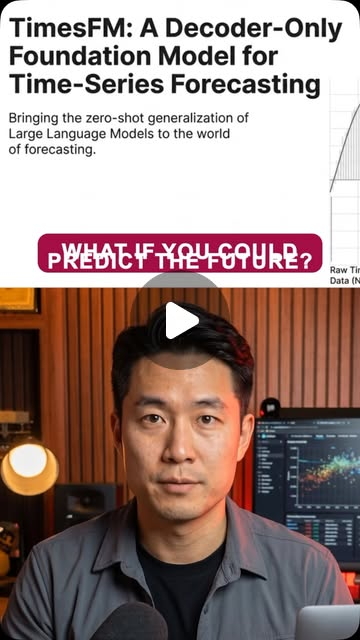

Instagram Reel

Google released TimesFM, an open source model that forecasts any time series...
video transcript (enriched by ClaudeClaw)
Summary
[CAPTION]
Google released TimesFM, an open source model that forecasts any time series data with zero fine-tuning needed. Pre-trained on massive real-world datasets, it predicts stock prices, weather patterns, energy demand, and more right out of the box.
[CAPTION]
Google released TimesFM, an open source model that forecasts any time series data with zero fine-tuning needed. Pre-trained on massive real-world datasets, it predicts stock prices, weather patterns, energy demand, and more right out of the box. #GoogleAI #TimesFM #TimeSeriesForecasting #MachineLearning #OpenSourceAI
[VIDEO]
What if you could predict the future? Google just released Times FM, an open source model that lets you forecast literally anything over time. Stock prices, energy, demand, weather patterns, retail sales. If it's a time series, this model can predict it. And here's what makes it wild. It was pre-trained on a massive data set of real-world time series data, so it works out of the box, zero fine-tuning needed. You just feed it your historical data and it tells you what's coming next. Google built this for internal use first, and it was so powerful they decided to open source it for everyone. Researchers, developers, businesses, anyone can use it right now. We're talking about a foundation model for time, the same way GPT is a foundation model for language. This is a huge deal. Go check out Times FM on GitHub and start predicting your future today.
View original on Instagram Reel →